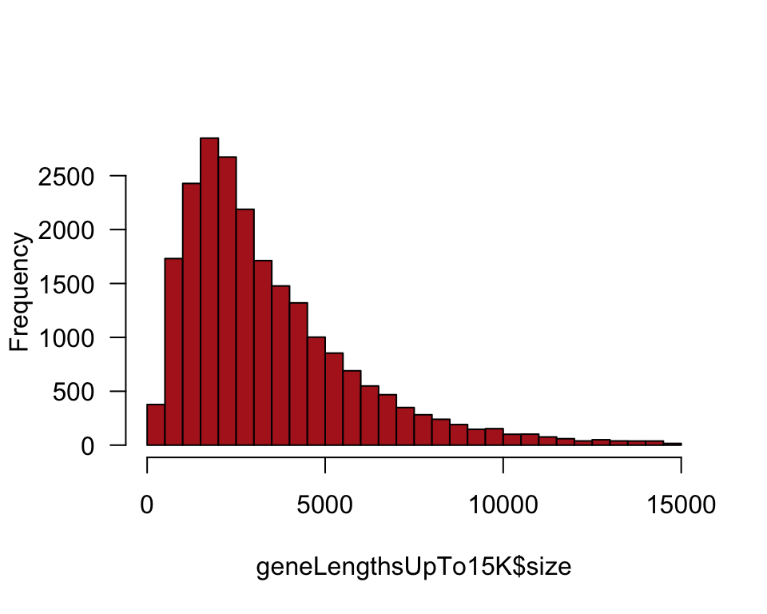
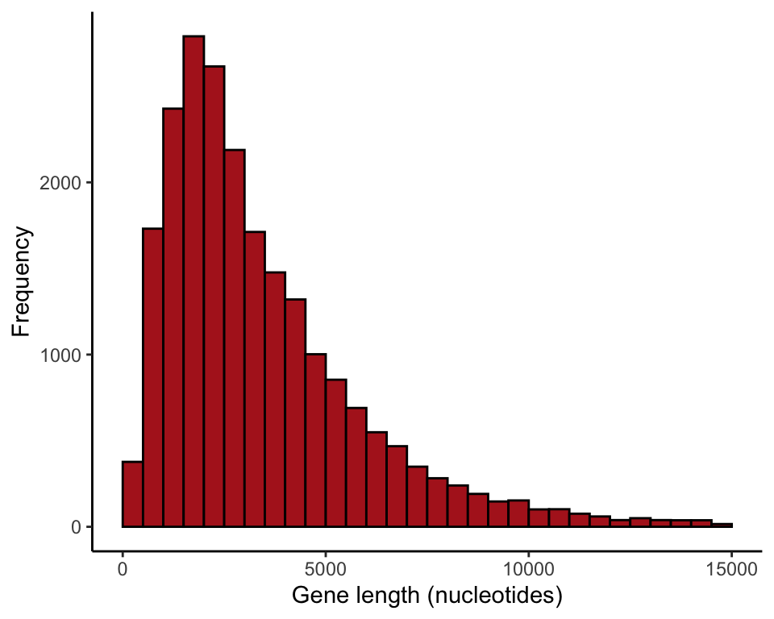
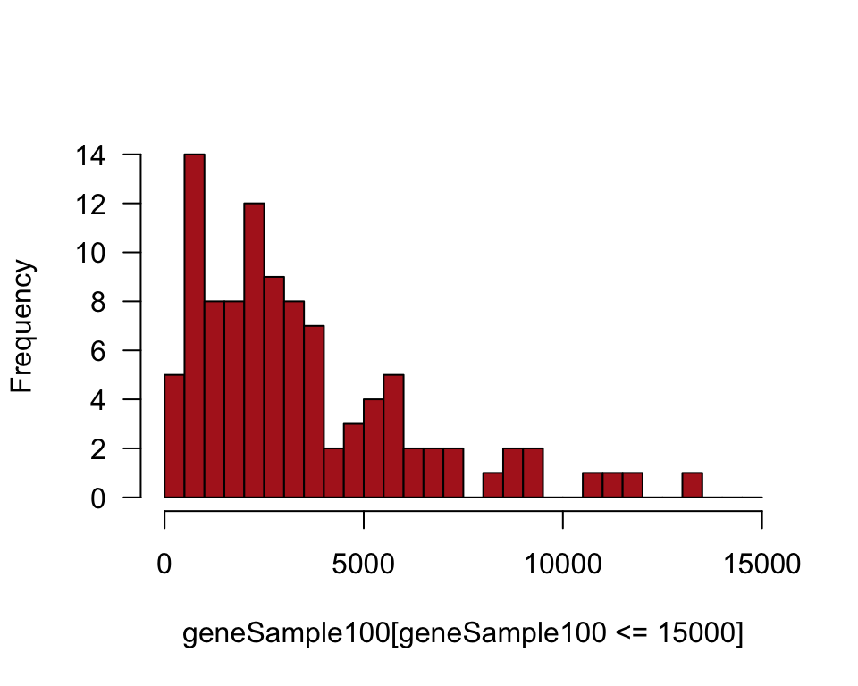
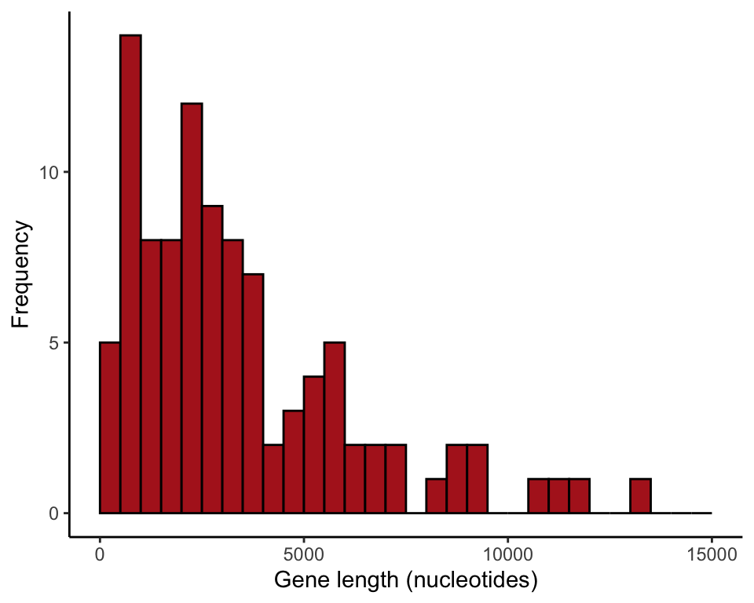
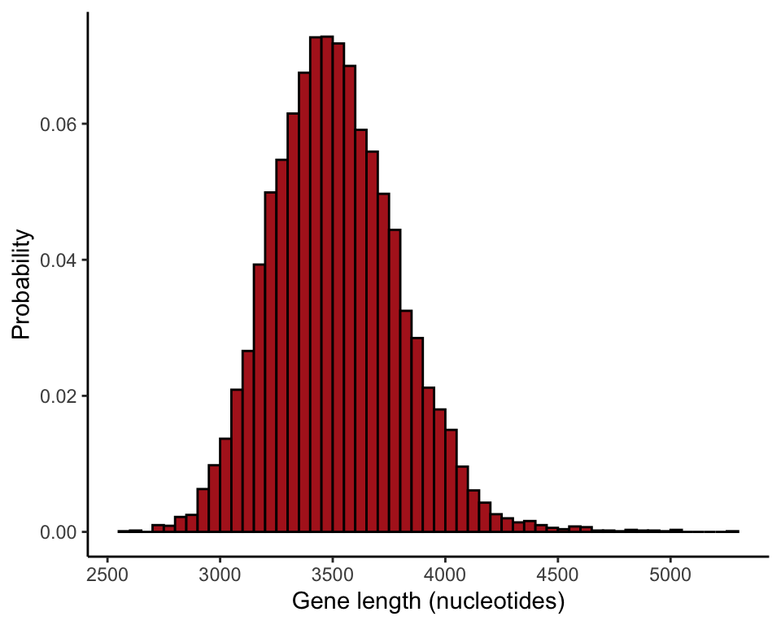
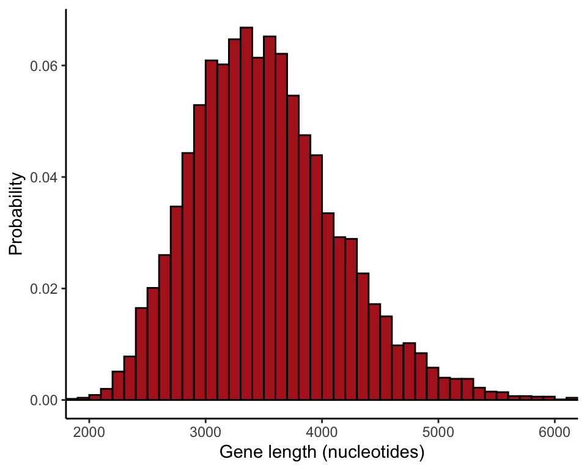
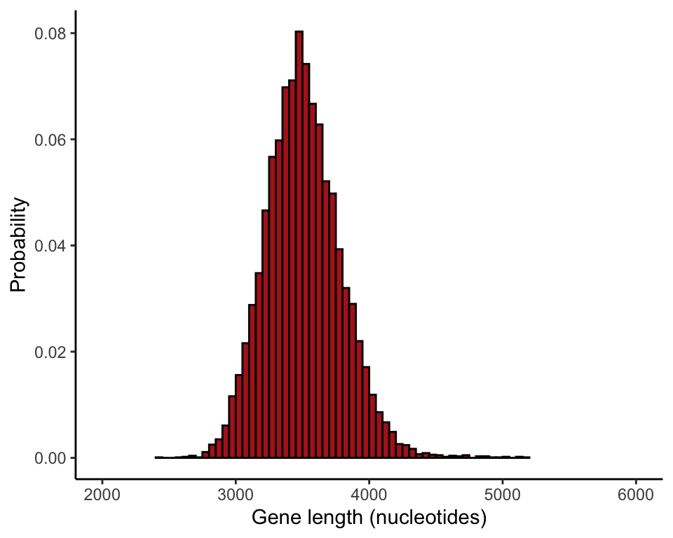
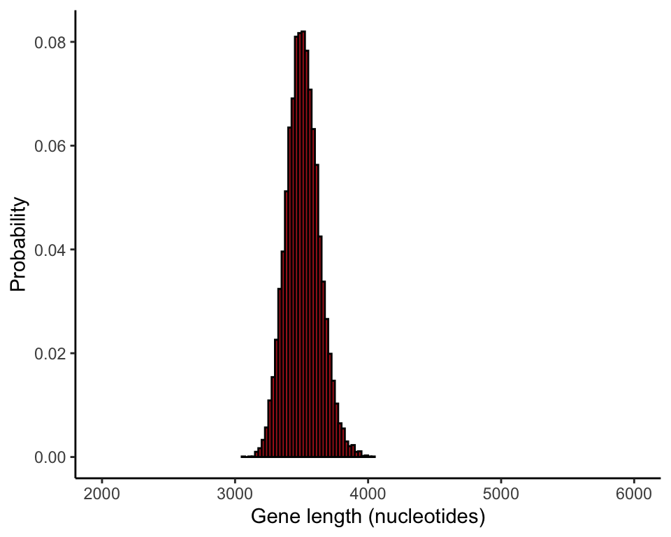
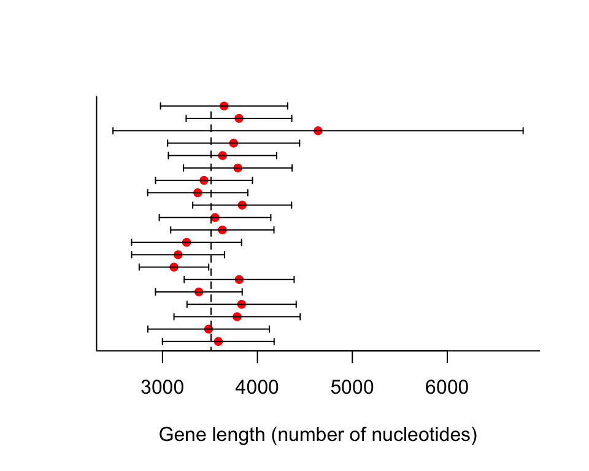
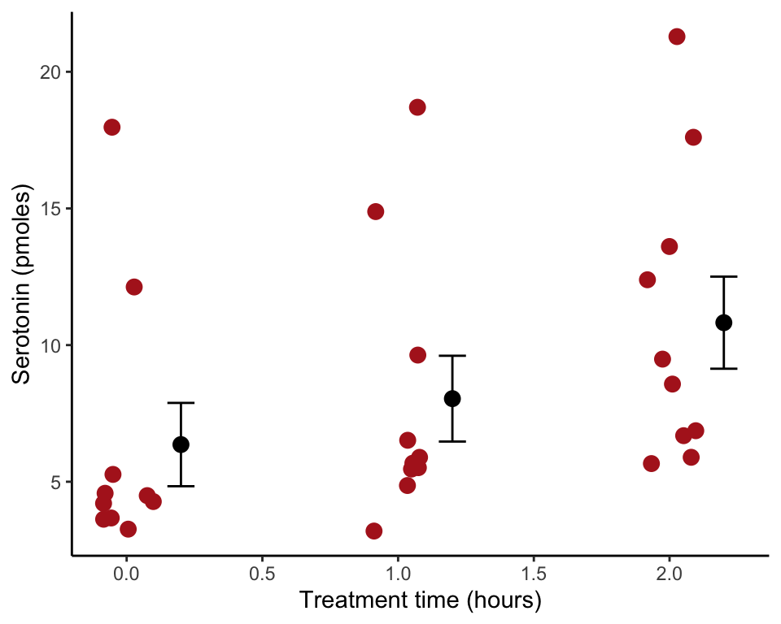

R code for examples in Chapter 4:
Estimating with uncertainty
We used R to analyze all examples in Chapter 4. We put the code here so that you can too.
Also see our lab on how to compute confidence intervals for means in R.
New methods on this page
-
Take a random sample from a known population of measurements:
genesample100 <- sample(humanGeneLengths$size, size = 100, replace = FALSE) -
Standard error of the mean, assuming no missing values:
n <- length(genesample100) sd(genesample100) / sqrt(n) -
Create a loop to repeatedly sample from a known population and calculate the mean each time:
for(i in 1:1000){ temporarySample = sample(humanGeneLengths$size, size = 100, replace = FALSE) mean(temporarySample) } -
Other new methods:
- Add means and error bars to a strip chart.
Load required packages
We’ll use the ggplot2 add on package to make graphs. It needs to be loaded only once per session.
library(ggplot2)Example 4.1. Lengths of human genes
Describe the parameters of a known population of human gene lengths. Then, take a random sample from the known population to estimate the population mean.
Read and inspect data
Read the human gene length data, which we will use as our known population of measurements.
humanGeneLengths <- read.csv(url("https://whitlockschluter3e.zoology.ubc.ca/Data/chapter04/chap04e1HumanGeneLengthsLongestTranscript.csv"), stringsAsFactors = FALSE)
head(humanGeneLengths)## gene size name description
## 1 ENSG00000000003.14 3796 TSPAN6 tetraspanin
## 2 ENSG00000000005.5 1339 TNMD tenomodulin
## 3 ENSG00000000419.12 1161 DPM1 dolichyl-phosphate
## 4 ENSG00000000457.13 6364 SCYL3 SCY1
## 5 ENSG00000000460.16 4355 C1orf112 chromosome
## 6 ENSG00000000938.12 2729 FGR FGRDraw histogram
We only want to plot the sizes of genes up to 15,000 nucleotides for this exercise. Use subset() for this purpose and put subset into a second data frame.
geneLengthsUpTo15K <- subset(humanGeneLengths, size <= 15000)Histogram of the length of genes in the human genome (Figure 4.1-1).
hist(geneLengthsUpTo15K$size, right = FALSE, col = "firebrick",
breaks = seq(0, 15000, 500), main = "", las = 1)
or
ggplot(data = geneLengthsUpTo15K, aes(x = size)) +
geom_histogram(fill = "firebrick", col = "black",
boundary = 0, closed = "left", binwidth = 500) +
labs(x = "Gene length (nucleotides)", y = "Frequency") +
theme_classic()
Mean and standard deviation
These are the known population mean and standard deviations (Table 4.1-1). Just this once we must use the total number of genes N instead of N - 1 in the denominator when calculating the variance and standard deviation, because we treat all the genes of the human genome as a population for this exercise, not as a sample. For this reason we can’t use the built-in commands to calculate variance and standard deviation, because they divide by N - 1.
meanGeneLength <- mean(humanGeneLengths$size)
meanGeneLength## [1] 3511.457N <- nrow(humanGeneLengths)
N## [1] 22385varGeneLength <- sum( (humanGeneLengths$size - meanGeneLength)^2 ) / N
sdGeneLength <- sqrt(varGeneLength)
sdGeneLength## [1] 2833.23Commands to put the mean and standard deviation into a table are shown here.
data.frame(Parameter = c("Mean", "Standard deviation"),
Value = c(meanGeneLength, sdGeneLength))## Parameter Value
## 1 Mean 3511.457
## 2 Standard deviation 2833.230Take a random sample of 100 genes
Take a single random sample from the population of genes. The argument replace = FALSE ensures that the same gene is not sampled twice. Save your random sample to a vector. Note: your sample won’t be the identical to the one in the book, because each random sample is subject to sampling error.
geneSample100 <- sample(humanGeneLengths$size, size = 100, replace = FALSE)Histogram of sample
We plotted only genes up to 15,000 nucleotides in length.
The ggplot() command requires that the data be in a data frame, and so we use data.frame(geneSample100) in the command. The output might include a warning if the sample contained one or more genes larger than 15,000 nucleotides, which were left out.
hist(geneSample100[geneSample100 <= 15000], right = FALSE, col = "firebrick",
breaks = seq(0, 15000, 500), main = "", las = 1)
or
ggplot(data = data.frame(geneSample100), aes(x = geneSample100)) +
geom_histogram(fill = "firebrick", col = "black",
boundary = 0, closed = "left", binwidth = 500) +
labs(x = "Gene length (nucleotides)", y = "Frequency") +
xlim(0,15000) +
theme_classic()
Sample mean and standard deviation
Because of sampling error, your values won’t be the identical to the ones in Table 4.1-2.
mean(geneSample100)## [1] 3442.55sd(geneSample100)## [1] 2808.199Show the sampling distribution
This shows how to take many random samples from the population to visualize the sampling distribution of the sample mean.
Create a loop
Write a loop to take a large number of random samples of size \(n = 100\) from the population. In each iteration, the sample mean is calculated and saved in a vector named results100 (the samples themselves are not saved). The results vector is initialized before the loop. The term results100[i] refers to the ith element of results100, where i is a counter. This many iterations might take a few minutes to run on your computer.
results100 <- vector()
for(i in 1:10000){
temporarySample <- sample(humanGeneLengths$size, size = 100,
replace = FALSE)
results100[i] <- mean(temporarySample)
}Histogram of sample means
The commands give the relative frequencies, as in Figure 4.1-3. Your results won’t be perfectly identical to ours in Figure 4.1-3 because 10,000 random samples is not a large enough number of iterations to obtain the true sampling distribution with extreme accuracy.
ggplot(data = data.frame(results100), aes(x = results100)) +
stat_bin(aes(y=..count../sum(..count..)), fill = "firebrick", col = "black",
boundary = 0, closed = "left", binwidth = 50) +
labs(x = "Gene length (nucleotides)", y = "Probability") +
theme_classic()
Compare different sample sizes
The following commands compare the sampling distribution of the mean for different sample sizes (Figure 4.1-4). The par() command formats the page
results20 <- vector()
for(i in 1:10000){
tmpSample <- sample(humanGeneLengths$size, size = 20, replace = FALSE)
results20[i] <- mean(tmpSample)
}
ggplot(data = data.frame(results20), aes(x = results20)) +
stat_bin(aes(y=..count../sum(..count..)), fill = "firebrick", col = "black",
boundary = 0, closed = "left", binwidth = 100) +
labs(x = "Gene length (nucleotides)", y = "Probability") +
coord_cartesian(xlim = c(2000, 6000)) +
theme_classic()
results100 <- vector()
for(i in 1:10000){
tmpSample <- sample(humanGeneLengths$size, size = 100, replace = FALSE)
results100[i] <- mean(tmpSample)
}
ggplot(data = data.frame(results100), aes(x = results100)) +
stat_bin(aes(y=..count../sum(..count..)), fill = "firebrick", col = "black",
boundary = 0, closed = "left", binwidth = 50) +
labs(x = "Gene length (nucleotides)", y = "Probability") +
coord_cartesian(xlim = c(2000, 6000)) +
theme_classic()
results500 <- vector()
for(i in 1:10000){
tmpSample <- sample(humanGeneLengths$size, size = 500, replace = FALSE)
results500[i] <- mean(tmpSample)
}
ggplot(data = data.frame(results500), aes(x = results500)) +
stat_bin(aes(y=..count../sum(..count..)), fill = "firebrick", col = "black",
boundary = 0, closed = "left", binwidth = 25) +
labs(x = "Gene length (nucleotides)", y = "Probability") +
coord_cartesian(xlim = c(2000, 6000)) +
theme_classic()
Standard error of the mean
We can calculate the standard deviation of the sampling distributions (standard errors) based on the many rando samples of size 20, 100, and 500. Your results won’t be perfectly identical to ours in Table 4.2-1 because 10,000 random samples is not a large enough number of iterations to obtain the true sampling distribution with extreme accuracy.
data.frame("Sample size" = c(20,100,500),
"Standard error" = c(sd(results20), sd(results100), sd(results500)))## Sample.size Standard.error
## 1 20 650.2406
## 2 100 281.9661
## 3 500 123.8812The standard error of gene length for the unique sample of 100 genes is as follows. The length command indicates the number of elements in a vector variable, which is the sample size if there are no missing (NA) elements in the vector. You won’t get the same value for the standard error as we obtained because your unique random sample is not identical to ours.
n <- length(geneSample100)
se.mean <- sd(geneSample100) / sqrt(n)
se.mean## [1] 280.8199Approximate confidence intervals
The commands below plot approximate 95% confidence intervals for the population mean based on 20 random samples of size \(n = 100\) (Figure 4.3-1). For the population we used the genes whose sizes were less than or equal to 15,000 nucleotides.
results <- data.frame(mean = rep(0,20), lower = rep(0,20), upper = rep(0,20))
for(i in 1:20){
tmpSample <- sample(humanGeneLengths$size, size = 100, replace = FALSE)
t <- t.test(tmpSample)
results$mean[i] <- t$estimate
results$lower[i] <- t$conf.int[1]
results$upper[i] <- t$conf.int[2]
}
plot(c(1:20) ~ mean, data = results, pch = 16, col = "red", yaxt = "n",
xlim = c(min(results$lower), max(results$upper)), bty = "l",
xlab = "Gene length (number of nucleotides)", ylab = "")
lines(c(3511.457, 3511.457), c(0,20), lty = 2)
segments(results$lower, 1:20, results$upper, 1:20)
segments(results$lower, 1:20 - 0.25, results$lower, 1:20 + 0.25)
segments(results$upper, 1:20 - 0.25, results$upper, 1:20 + 0.25)
Error bars Fig. 4.4-1
Draw a strip chart with standard error bars for the locust serotonin data. The data are from Chapter 2 (Figure 2.1-2).
Read and inspect the data.
locustData <- read.csv(url("https://whitlockschluter3e.zoology.ubc.ca/Data/chapter02/chap02f1_2locustSerotonin.csv"), stringsAsFactors = FALSE)
head(locustData)## serotoninLevel treatmentTime
## 1 5.3 0
## 2 4.6 0
## 3 4.5 0
## 4 4.3 0
## 5 4.2 0
## 6 3.6 0Draw the strip chart
Use stat_summary() to overlay mean and standard error bars. We shifted the position of the bars using position_nudge() to eliminate overlap.
ggplot(locustData, aes(treatmentTime, serotoninLevel)) +
geom_jitter(color = "firebrick", size = 3, width = 0.1) +
stat_summary(fun.data = mean_se, geom = "errorbar",
width = 0.1, position=position_nudge(x = 0.2)) +
stat_summary(fun.y = mean, geom = "point",
size = 3, position=position_nudge(x = 0.2)) +
labs(x = "Treatment time (hours)", y = "Serotonin (pmoles)") +
theme_classic()